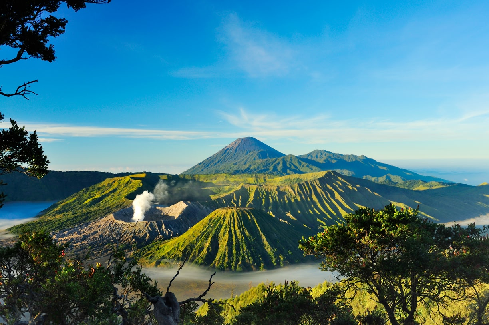

JELAJAH WISATA INDONESIA
Temukan Keindahan Alam dan Budaya Indonesia| Beranda | Wisata | Galeri |
|
 Gunung BromoGunung Bromo merupakan salah satu tempat wisata terkenal yang berada di Jawa Timur |

Kawah IjenKawah Ijen merupakan salah satu tempat wisata terkenal yang berada di Jawa Timur |

Air Terjun Cuban RondoAir Terjun Cuban Rondo merupakan salah satu tempat wisata terkenal yang berada di Jawa Timur |
🎶Music Nusantara
Silahkan dengarkan music sambil menikmati informasi wisata indonesia
🐎Wonderland Indonesia
Silahkan melihat video berikut sambil menikmati informasi wisata Indonesia